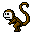
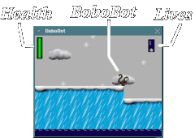
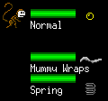
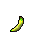
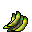
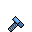
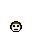

BoboBot
Documentation
(c) 1998-2000 New Breed Software
by Bill Kendrick, Marianne Waage & Melissa Hardenbrook
WHAT IS BOBOBOT?

BoboBot is a multi-level one-player action game starring "BoboBot,"
the robo-monkey. It's played with the keyboard, or optionally with a
joystick, uses Xlib to display graphics, and optionally uses
Sam Lantinga's "Simple Direct-Media Layer" to play music and sound.
THE STORY
An evil force has begun taking control of Earth, and it's your job to
stop it. To do this, you must travel the globe and defeat eight evil
bosses to get access to the evil force, wherever it is hiding.
As you defeat these bosses, you also gain special weapons and abilities.
REQUIREMENTS
BoboBot is for X-Window. You need a UNIX system to compile the source
code and run the program. You need an X display (a Linux box, a UNIX
workstation, or an X-Window server for a PC or Mac) to see the game and
interact.
You need a Linux system to play with joystick and/or sound and music.
BoboBot was developed under RedHad Linux on a 133MHz Pentium PC with
16MB and later with 64MB RAM. A generic game pad controller and
a 16bit Sound Blaster sound and game card were used during development.
To compile BoboBot, you'll need a C compiler ("gcc" was used during
development, and is recommended), and "make". Xlib needs to be installed,
of course. A joystick driver and the SDL (Simple Directlayer Media) library
are required for joystick and sound.
INSTALLATION
Compiling
See the INSTALL file.
Where Do I Get The Libraries?
Vojtech Pavlik's excellent Linux Joystick Driver can be downloaded from:
http://atrey.karlin.mff.cuni.cz/~vojtech/joystick/
The Simple Direct-Media Layer and SDL_Mixer libraries (for sound and music)
can be downloaded from:
http://www.libsdl.org/
X-Window Icon
If you'd like to add "BoboBot" to, say, "GoodStuff" for FVWM, or set a
default icon in WindowMaker, feel free to use the included
"bobobot-icon.xpm" image.
I used this in my ".fvwmrc" file:
*GoodStuff BoboBot .../bobobot-icon.xpm Exec "BoboBot" exec
.../bobobot
Where "..." is the path to the files on this computer.
I also have this line, which makes the icon appear when I minimize
the "BoboBot" game window:
Style "BoboBot" Icon .../bobobot-icon.xpm
Where "..." is the path to the icon on this computer.
STARTING BOBOBOT
To begin a game, run the "bobobot" executable.
Arguments accepted include:
- bobobot some.display:0.0
Open a window on the display specified, instead of the default
display (taken from your "DISPLAY" environment
variable).
- bobobot --nomusic
If sound and music are compiled in, this will disable music.
You will hear sound effects only.
- bobobot --nosound
If sound and music are compiled in, this will disable sound effects.
You will hear music only.
- bobobot --help
Show a very brief help screen to remind you how to play,
and quit.
- bobobot --version
Show the version of "bobobot" that you're playing, and the
versions of SDL and the joystick driver supported, if they
were compiled in. Then quit.
THE TITLE SCREEN
When you begin a game of BoboBot, after a spending a few moments
loading graphics, the "BoboBot" title screen will appear.
Press [SPACE] or any fire button on your joystick at any time to begin
a new game of BoboBot.
Press [Q] at any time to quit "BoboBot" completely.
A few different graphics will show up on the title screen, some of which
give tips on playing!
THE GAME
Level-Selection Screen
When you start a new game, you'll see the level-selection screen.
There are 9 rectangles on the screen (three by three) and a pulsating
selection cursor.
At this screen, you choose which part of the world (hence, which boss)
you wish to travel to.
You can select any of the 8 outer levels. The center box represents
the evil force's level. You cannot get to that level until you've
beaten the 8 other levels.
Use the [ARROW] keys or the joystick controller to move the selection
cursor over the level you wish to play. Notice that at the bottom the
name of the place and the name of the boss appear. Over the selection
cursor, an image of the boss will appear.
(Note: Once you've beaten a level, you can't go back. This is
represented by the level's box being greyed out and a big red
slash going through it. If you place the selection cursor over it,
you'll see the word "DONE" instead of its boss.)
Press [SPACE], [RETURN] or any fire button to enter that level. Once
there, you can't return to the level-selection screen until you've
defeated the entire level! (Or, of course, if you give up or lose and
begin a new game.)
Press [Q] to give up. You will be asked if you're sure. Press [Y]
to quit back to the title screen, aborting your game, or [N] to keep
playing and remain in the level-selection screen.
Game Screen
The game is seen from the side. You are the little monkey (BoboBot).

Health
At the upper left is a green health meter. As you get hurt
(by bumping into, or being shot by enemies) your health goes down,
the green being replaced by red. When your health runs out, you
lose a life.
When you've beaten a level and gained a new weapon, whenever that
weapon is selected, you'll see it's ammunition meter on the very right
of your health meter. (An image of the weapon will be in the center
of this meter.)
Note: your default weapon is unlimited, so no ammunition meter appears
when you have this weapon selected.
When you've reached the end of a level, and are being faced with the
level's evil boss, his/her health meter will be displayed next to
your meters.
Lives
At the upper right the number of lives you have are displayed.
(A number next to a little monkey head.) You start with 3 lives and
when you reach 0, the game is over.
Special Screens
As you travel through different environments in the levels, you'll
come across the following:
- Wavey, underwater screens
- Snowy screens
- Dark screens, where you can only see the area immediately around
your character
- Flickery screens, where there's a broken lamp which causes the
screen to flash between lit (normal) and dark
Moving Around The Screen
To move BoboBot, use the arrow keys or the joystick.
[LEFT] - Face left, move left
[RIGHT] - Face right, move right
The longer you hold left or right, the faster you run.
Remember this when you need to jump a long way... you will
probably want to get a running start!
Also know that you can maneuver in mid-air with the [LEFT]
and [RIGHT] arrow keys. Just know that if you turn the
other way, or let go of both keys, you'll STOP moving
left or right, and just fall straight down!
To jump, use the [SPACE] key or the [A-Fire] button on your joystick.
You can only jump when you're standing on a solid surface.
The longer you hold the jump, the higher you jump. Sometimes, you
DON'T want to hold jump as long as you can. There are many tricky spots
where you'll bump your head if you jump too high, and won't be able to
land where you need to (usually falling to your doom).
Using Your Weapon(s)
BoboBot can have up to 9 weapons.
The first is your standard bullet. You start with this weapon, and
never run out of ammunition.
The other eight weapons are gained as you defeat levels.
To shoot, press the [Z] key on the keyboard, or the [B-Fire] button
on your joystick.
To go to the weapon-selection screen press the [TAB] key on the
keyboard, or the [C-Fire] or [D-Fire] button on your joystick if you have
one.

(NOTE: You can't change weapons, and therefore can't get to the
weapon-selection screen, unitl ALL of your bullets are off of
the screen!)
While in the weapon-selection screen, press [UP] and [DOWN] to
select a different weapon, and [TAB], [SPACE] or [RETURN] or
any fire button to exit the weapon-select screen and return to the
game.
Some weapons are aimable. If you're not holding any direction,
you'll shoot the way you're facing. Otherwise, aimable weapons will
shoot in the direction you're pressing on the arrow keys or the
joystick.
Different weapons have different effects. Some do damage, others
affect enemies in other ways (for example, "Ice Blaster" freezes the
enemy for a moment).
After you've gained a new weapon, if you have a chance, practice with
that new weapon to understand how it works.
Note that some enemies require a different number of shots, depending
on what weapon you're using. Some enemies aren't even affected by
some weapons! (Your bullet will ricochet off of them.)
Moving Around The Level
You start at the left on the first screen of the level, and maneuver
your way through the level one screen at a time. Usually, you're headed
to the right, but sometimes you need to jump up to a screen above,
drop down to a screen below, and even go left.
Often, but not always, you can go back to screens you've already
visited. (Sometimes you just can't reach, and sometimes the game
just won't let you go back.) If you didn't destroy all of the enemies
on that screen, they'll be there waiting, so watch out!
Many screens which aren't solid at the bottom can be quite dangerous.
Unless it's OBVIOUS that down is the only way to go, avoid falling to
the bottom or you'll die!
Some screens are "Checkpoints". If you die, you'll be returned to
a checkpoint screen (rather than going all the way to the beginning
of the level).
Upgrades and Other Goodies
When you destroy enemies, sometimes a "goody" pops out.
Grab them quickly, because they disappear after a few moments.
Note: Some screens (usually secret ones that you have to look for)
already have "goodies" on them. They don't disappear until you pick
them up. But, once you grab them, you can't go back to the screen and
get them again!

Banana
Gives you a little health. (About 8%)

Bunch of Bananas
Gives you a lot of health. (About 40%)

Little Bolt
Gives you a little more ammunition for
THE CURRENTLY SELECTED WEAPON. (About 8%)
-
Nut and Bolt
Gives you a lot of ammunition for
THE CURRENTLY SELECTED WEAPON. (About 40%)

Monkey Head
"One-Up!" It's an extra life!
- ???
SOME secret screens have "goodies" not listed
here! Sometimes you've even got to figure out
HOW to get them! Good luck!
If you grab a goodie and it has an affect (for example, your health
gets increased because it wasn't at 100% and you grabbed a banana),
you will hear a sound and the goody will fly up to the appropriate
status display on the screen. (For example, a banana would fly up to
the upper left, where your health meter is.)
If the goody has no effect (for example, you grab a banana but your
health is already at 100%, or you grab a bolt, but the weapon you
have selected is the normal bullet gun), the goody will drop off the
bottom of the screen quietly.
Defeating Bosses
At the end of each level is the level's boss. Some tips to defeating
bosses are:
- Try to make sure your health is full before you fight a boss.
- Try to make sure your weapons are full, too.
- Watch the pattern of movement and shooting the boss has.
- Notice how the boss reacts to you. Use this knowledge to your
advantage!
- Stay CALM!
Some bosses are better fought against with different weapons.
Here's a really big hint!
- Defeat "The Mummy" of Egypt before you try to defeat
"Chronoman" of Switzerland!
Eventually, you'll find your own preference of who to beat first,
and with practice, you'll whip through the levels very quickly!
CREDITS
| Concept: |
Bill Kendrick, Melissa Hardenbrook |
| Graphics: |
Bill Kendrick, Marianne Waage,
Melissa Hardenbrook |
| Software: |
Bill Kendrick |
| Sound effects: |
Bill Kendrick and others
(WAV's and AU's downloaded from many sound archives) |
| Music: |
| Title screen: |
"Welcome Home" by "Lizardking" of Alcatraz
Gustaf Grefberg, 1993. Used with permission.
gustaf.grefberg@pp.itv.se
http://www.itv.se/~a1055/
|
| Antarctic: |
"Ambient Power" by Vogue of Triton
Magnus Hogdahlnd, 1993 |
| Egypt: |
"Crystal Orbit" by ??? |
| Switzerland: |
"Crystal Starlight" by ??? |
| Grand Canyon: |
"Bombtrack" by Amathiew Berthaud 1994 |
| Final Level: |
"Zak-zaka-zak-zak" by Purple Motion 1994 |
| Level select: |
"Walk'n Titanize" by Dizzy of CNCD
Juha Kujanpaa, 1993. Used with permission.
jtkujanp@itu.cc.jyu.fi
http://www.jyu.fi/~jtkujanp/
|
| Bosses: |
"Belewian" by Dizzy of CNCD 1994. Used with permission. |
|
| Patches: |
Dennis Payne for recoding the keyboard routines more efficiently.
|
| Thanks to: |
Sam Lantinga for writing and supporting SDL.
Vojtech Pavlik for writing and supporting joystick driver.
|
(c) 1998-1999 New Breed Software
CONTACT
Comments, questions, suggestions and DONATIONS accepted!
|